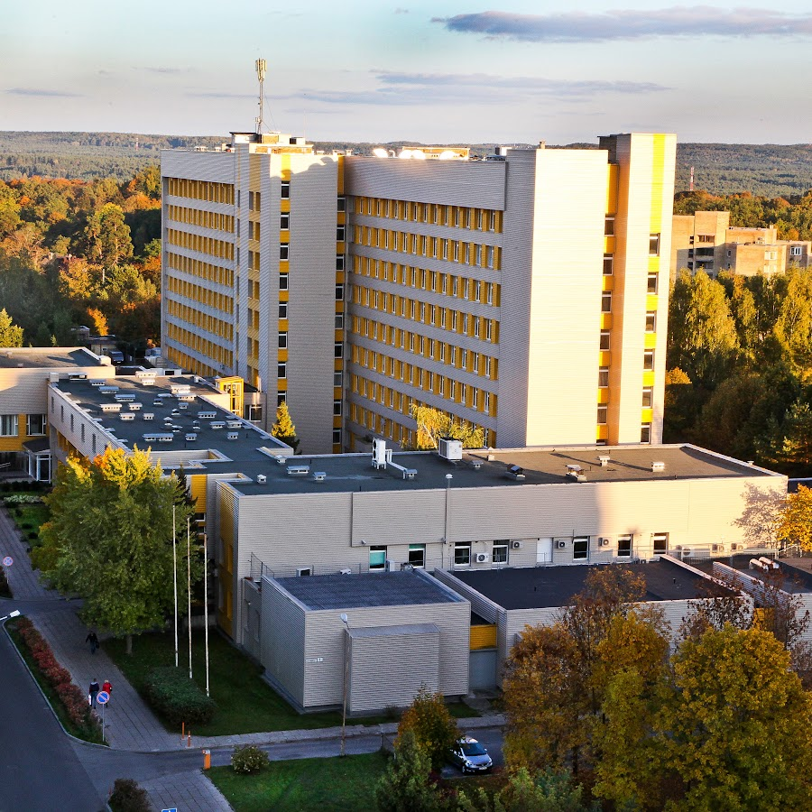
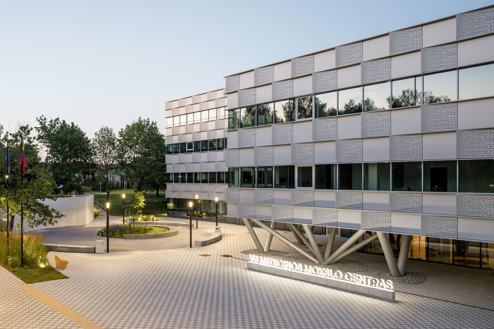
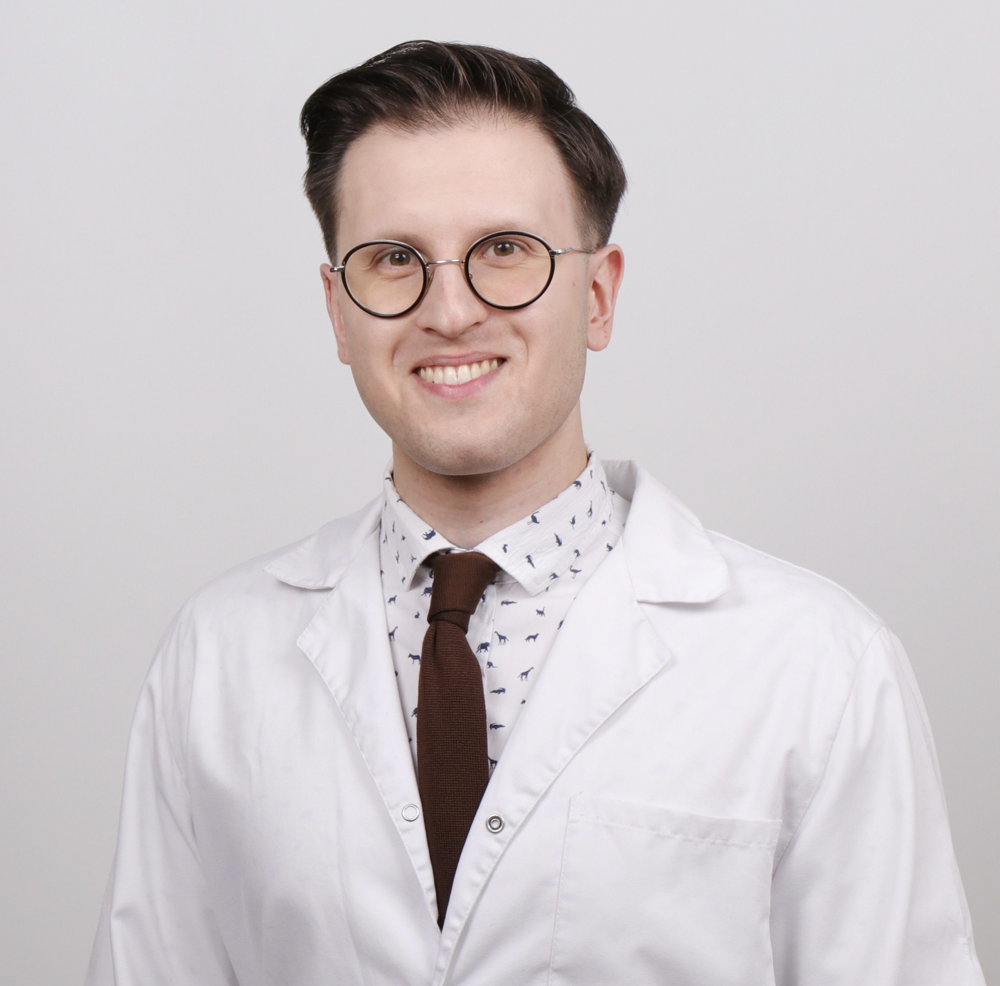
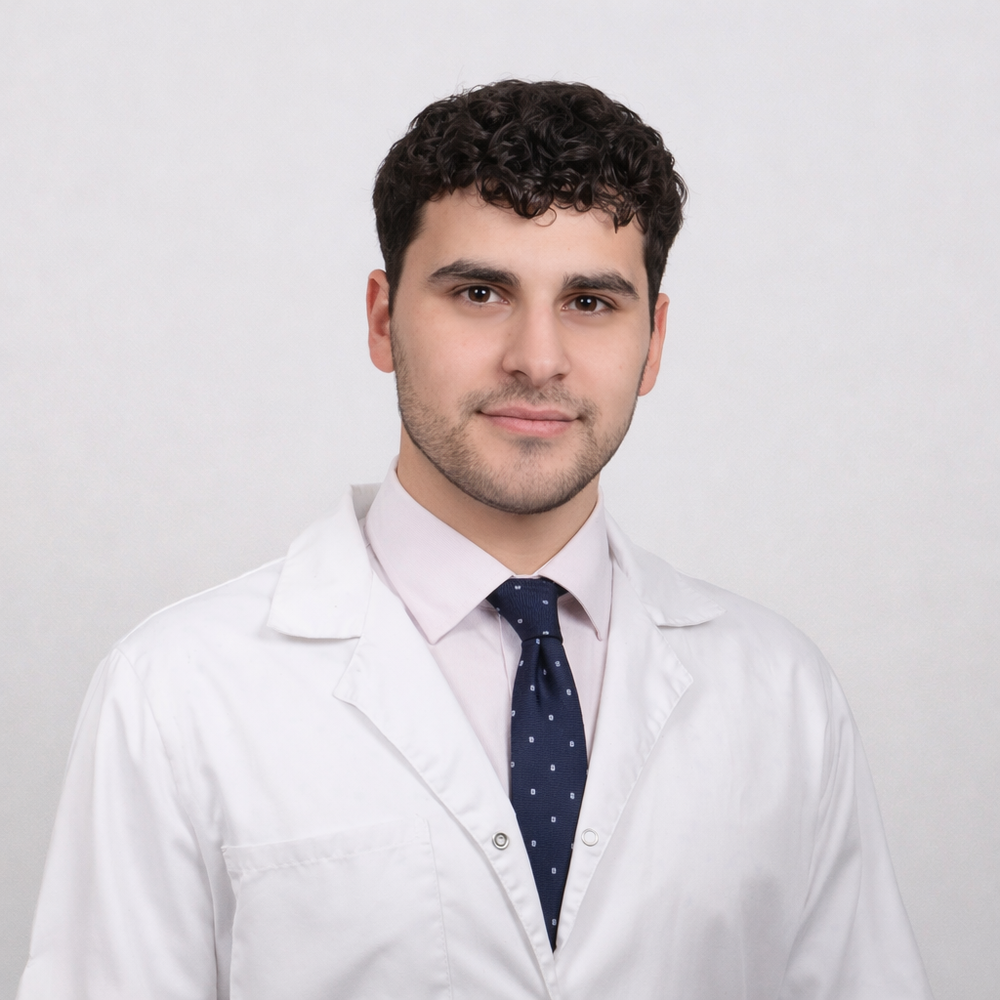
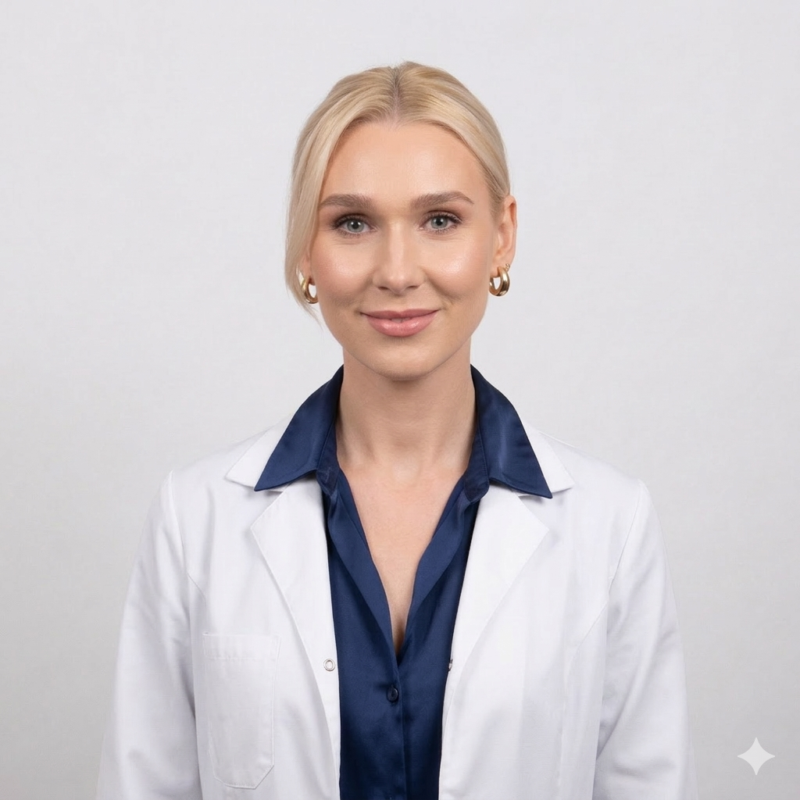
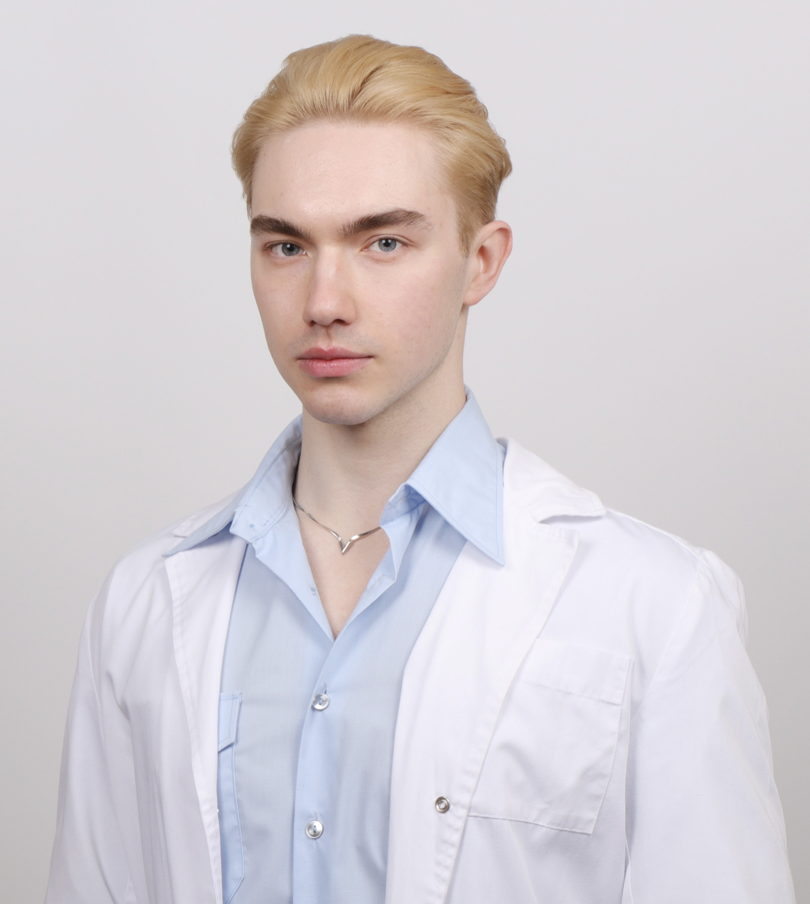

Spartinti tyrimus
Automatizuojame mokslo rutiną – duomenų rinkimą, dokumentavimą, registrus, – kad tyrėjai ir gydytojai laiką skirtų atradimams, o ne popieriams.
Kiekvienu projektu siekiame vieno tikslo: geresnio mokslo – greičiau. Visą dėmesį sutelkiame į kruopščias mokslines publikacijas: apie tai, kaip technologijos keičia tyrimus, ir apie klinikinius proveržius, kuriuos įgalina kokybiški duomenys.
Trys tikslai, viena kryptis.
Automatizuojame mokslo rutiną – duomenų rinkimą, dokumentavimą, registrus, – kad tyrėjai ir gydytojai laiką skirtų atradimams, o ne popieriams.
Mūsų pačių įrankiai yra tyrimų objektas. Tiriame, kaip nauja programinė įranga veikia mokslo kokybę, spartą ir kruopštumą, ir skelbiame, ką sužinome.
Aukštos kokybės publikacijos – tai rezultatas, kurio siekiame: apie technologijas moksle, apie kolorektalinį vėžį ir apie klausimus, į kuriuos pagaliau leidžia atsakyti geresni duomenys.
Mūsų tikslai praktikoje: geresni duomenys, geresnis mokymas, geresnis mokslas.
Nacionaliniam vėžio centrui kuriame nacionalinį kolorektalinio vėžio registrą: struktūruotus ir kokybiškus kiekvieno atvejo duomenis, surenkamus vieną kartą ir paruoštus tyrimams. Iš kokybiškų nacionalinio masto duomenų gimsta stiprios publikacijos, o nuo jų galiausiai priklauso ir proveržiai gydant vėžį.

Medicinos mokslų centras – vienas mūsų naudotojų: jo simuliacijų centras mūsų programine įranga planuoja ir optimizuoja mokymus. Geriau suplanuoti scenarijai padeda paruošti geresnius gydytojus ir kelia medicinos mokslo bei studijų kokybę Lietuvoje.

„Abba Group“ įkūrė du gydytojai, kurie kuria įrankius, kurių patiems trūko moksle.

Vadovauja inžinerijai ir architektūrai: ambicingas tyrimų idėjas paverčia patikima programine įranga.

Rūpinasi, kad veikla būtų tiksli ir suderinta: kiekviename projekte strategiją paverčia konkrečiais darbais.
Žmonės, kurie kartu su įkūrėjais kuria „Abba Group“.

Formuoja, kaip perteikiame vertę ir kuriame pasitikėjimą, o aiškiu pozicionavimu padeda produktams augti.

Atsako už produktų kryptį ir rezultatus, kad spręstume tinkamas problemas tinkamu būdu.